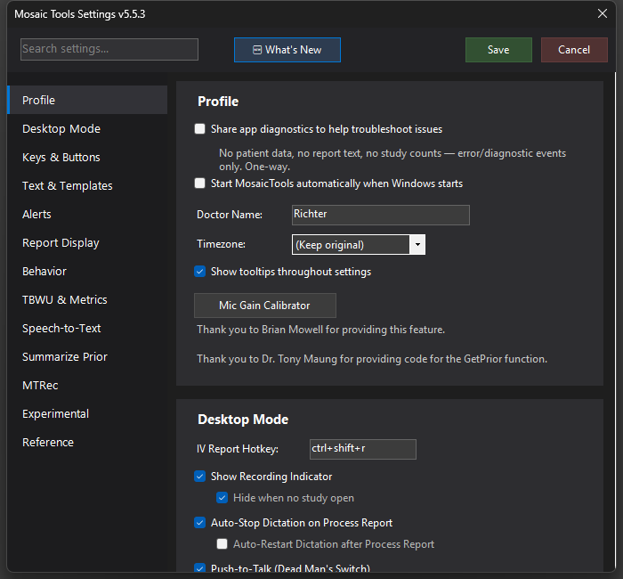
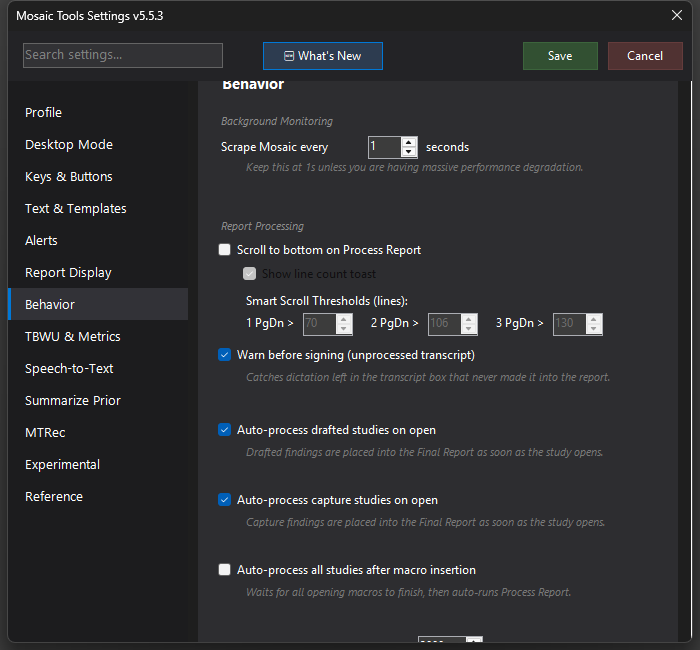

Process Report
The one-button core of the workflow — sends Alt+P to Mosaic to structure your dictation into the report, wrapped with auto-stop dictation, smart scrolling, and every post-process surface MosaicTools offers.


What it does
Process Report is the center of the MosaicTools workflow. The action itself sends Alt+P to Mosaic, which runs Mosaic's own LLM to structure your dictation into the report. What MosaicTools adds is everything around that keypress: it can stop your dictation first, scroll the report so the IMPRESSION is visible, and light up all the post-process surfaces — the report popup, the impression popup, MTRec boxes, and (if enabled) RecoMD/RadAI.
How to turn it on / set it up
Map Process Report to a mic button or hotkey under Settings → Keys & Buttons. The wrappers each have their own toggle:
- Settings → Desktop → Auto-Stop Dictation on Process Report — stops dictation when you press it (with an optional Auto-Restart Dictation after Process Report sub-option so you can keep dictating into the impression).
- Settings → Behavior → Scroll to bottom on Process Report — scrolls so the impression is on screen, with Smart Scroll Thresholds (lines) controlling how many PgDn presses fire for longer reports, and Show line count toast for a quick length readout.
- Settings → Behavior → Hide clinical history during Process Report — transiently hides the clinical history while Mosaic's LLM runs, so it can't hallucinate a finding that appears only in the history. Nondestructive; the history is restored immediately after processing.
Using it
Dictate, press the button once, and watch the surfaces appear: the structured report lands in Mosaic, the report/impression popups open if enabled, and once the impression generates, MTRec runs and shows its clickable boxes next to "Final Report".
Tips & gotchas
If you triggered it while dictating with auto-stop on, MosaicTools waits for dictation to fully stop and finalize before processing — one press is enough. Process Report is also what arms the sign-warning: dictating after processing and then signing without re-processing triggers the warning box.